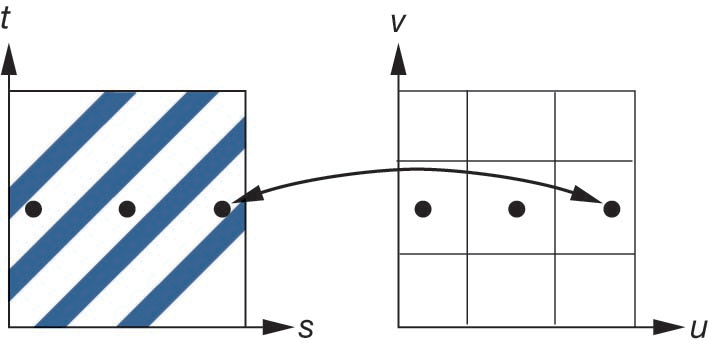

计算机图形学
第六章(4) 纹理采样与过滤
纹理放大和缩小
当采用重心坐标插值计算得到三角形内部每个面片$P$对应的纹理坐标$(u_p, v_p)$，下一步需要从纹理中获得相应的颜色
如果取色的计算方式不正确，就无法获得正确的渲染效果
学习目标
- 解释纹理采样中走样的原因
- 比较两种基本过滤方法，最近邻(Nearest Neighbor)和双线性(Bilinear)插值
- 描述预过滤技术Mipmapping的核心原理
- 应用不同的纹理环绕模式
采样的问题
假设有一个$512\times 512$像素的高清砖墙纹理，但渲染的物体在屏幕上非常小，只覆盖了$2\times 2$个像素
原始纹理 $512\times 512$
最终渲染结果 $2\times 2$
GPU要为这4个屏幕像素中的1个着色，应该读取纹理图像中哪个像素的颜色？
方案A：随便选一个点？
结果：不稳定，下一帧面片中心虽然只在纹理坐标上偏移0.01，但可能会对应到纹理上完全不同的一个点，比如从砖块跳到了砖缝上，导致纹理闪烁
方案B：计算出面片覆盖的纹理区域，取该区域内所有像素的平均值？
结果：理论上正确且稳定，但计算量大，尤其是当面片覆盖的纹理区域很大时，GPU无法在一个时钟周期内完成计算
采样的本质
根据信号处理理论，纹理是一组的离散二维信号，即数据点
屏幕像素(面片)是对这个信号进行重新采样的结果
香农-奈奎斯特采样定理：为了完美地重建一个信号，采样频率必须至少是原始信号最高频率的两倍
走样
- 缩小(Minification)：当采样频率(屏幕像素)远低于纹理信号的频率(高分辨率纹素)，会产生欠采样(Undersampling)，GPU丢失了大量信息，导致闪烁和摩尔纹
- 放大(Magnification)：当采样频率高于纹理信号频率，有足够的样本，需要在已知的数据点(纹素)之间进行(插值(Interpolation)重建信号
纹理环绕(Texture Wrapping)
纹理坐标$(u, v)$通常被规范化到$[0, 1]$范围内，但在实际应用中，纹理坐标可能会超出这个范围，比如$u=1.5$, 此时GPU该怎么办
可通过设置纹理环绕模式造告诉GPU如何处理
GL_REPEAT(默认)
重复纹理，($1.5\rightarrow 0.5$)
用途：地板、墙纸、草地等
GL_MIRRORED_REPEAT
镜像重复
用途：特殊的对称图案
GL_CLAMP_TO_EDGE
夹取边缘颜色，将$(u,v)$保持在$[0,1]$之间，($1.5\rightarrow 1.0$)
用途：UI元素、海报等不重复元素
GL_CLAMP_TO_BORDER
使用指定的边框颜色
用途：特殊效果，如阴影贴图

纹理放大(Magnification)
当一个纹素(Texel)覆盖多个屏幕像素(面片)时，需要对已知的纹素数据点之间进行插值
最近邻插值(Nearest Neighbor)
选择距离采样点$(u_p, v_p)$最近的纹素颜色作为面片颜色
$$ \begin{cases} x=floor(u\times W + 0.5) \\ y=floor(v\times H + 0.5) \end{cases} $$ 取纹素$(x, y)$的颜色
优点：计算简单，速度快
缺点：边缘锯齿明显，画面粗糙，产生明显的“马赛克”效果
双线性插值(Bilinear Interpolation)
使用采样点$(u_p, v_p)$周围的四个纹素，根据距离加权平均得到面片颜色，这是更为平滑的信号重建方式
- 找到$(u_p, v_p)$周围最近的4个纹素中心
- 计算$(u_p, v_p)$到这4个中心的相对距离
- 根据距离，进行加权平均
优点：颜色过渡平滑，画面细腻，“马赛克”会消失
缺点：计算量较大，速度较慢，纹理会变得模糊
双线性插值
双线性插值指在两个方向(X和Y)分别进行线性插值
假设采样点$(u_p, v_p)$位于纹素$(x_1, y_1)$和$(x_2, y_2)$之间，四个纹素的颜色分别为$C_{11}, C_{12}, C_{21}, C_{22}$
- 先在X方向上进行线性插值：
- 再在Y方向上进行线性插值：
$$ \begin{cases} C_{1} = C_{11} \times (1 - s) + C_{21} \times s \\ C_{2} = C_{12} \times (1 - s) + C_{22} \times s \end{cases} $$ 其中$s = \frac{u_p - u_{x1}}{u_{x2} - u_{x1}}$
$$ C_p = C_{1} \times (1 - t) + C_{2} \times t $$ 其中$t = \frac{v_p - v_{y1}}{v_{y2} - v_{y1}}$
最终通过3次线性插值，读取4个纹素数据，重建出$(u_p, v_p)$的一个过渡平滑的采样颜色$C_p$
放大滤波Demo
纹理缩小(Minification)
当一个屏幕像素(面片)覆盖多个纹素(Texel)时，GPU需要从这些纹素中计算出一个颜色值
根据采样定理，会遇到欠采样问题，面片的采样率不足以捕获纹理的高频细节
如果直接使用“最近邻插值”或“双线性插值”，会导致随机抓取高频样本，产生闪烁和摩尔纹
对面片所覆盖的所有纹素(例如，$256\times 256$个)进行平均，得到面片颜色
但是实时计算时性能开销极大
可以采用预过滤与Mipmapping
以空间换时间，GPU不在运行时动态计算平均值，而是在加载纹理时，预先计算好
多级渐远纹理映射(Mipmapping)


Mipmap (多级渐远纹理) 是一系列预先计算好的、分辨率递减的平均值图像序列
GPU渲染每个面片时，会根据该面片在屏幕上的大小(通过LOD计算)，自动选择一个最合适的Mipmap层级(即最接近该面片覆盖区域大小的平均图)去采样
缩小滤波
Mipmapping实现纹理滤波有了更多的选项
GL_NEAREST_MIPMAP_NEAREST
- 层间：NEAREST，选最近的一层
- 层内：NEAREST，使用最近邻插值进行点采样
- 速度最快，有马赛克，且Mip层级过渡有明显条带
GL_LINEAR_MIPMAP_NEAREST
- 层间：NEAREST，选最近的一层
- 层内：LINEAR，使用双线性插值进行点采样
- 层内平滑，无马赛克，但Mip层级过渡有明显条带
GL_NEAREST_MIPMAP_LINEAR
- 层间：LINEAR，混合两个Mip层
- 层内：NEAREST，使用最近邻插值进行点采样
- 层间平滑过渡，无条带，但层内有马赛克感，实践中已很少使用
GL_LINEAR_MIPMAP_LINEAR
- 层间：LINEAR，混合两个Mip层
- 层内：NEAREST，使用双线性插值进行点采样
- 三线性滤波(Trilinear)，完全平滑，质量最佳，但速度稍慢。在所有距离和角度下都平滑，是现代游戏的首选方案
左图：仅使用“最近邻插值”进行缩小滤波，出现严重走样和摩尔纹；右图：使用Mipmapping和三线性滤波，画面平滑且细节丰富
Mipmap使用效果
不同采样方法效果展示
课堂测试
在纹理缩小过程中，使用Mipmapping和三线性滤波的主要优点是什么？
情景问答
你正在开发一个开放世界赛车游戏。你需要为赛道（柏油马路）应用纹理。这条马路会从玩家的眼前一直延伸到地平线。
问题：为了达到最佳的视觉效果（近处清晰、远处不闪烁、过渡平滑），你认为应该组合使用以下哪些技术？
- 环绕模式 (Wrapping): ?
- 放大过滤 (Mag Filter): ? (解决近处的信号重建)
- 缩小过滤 (Min Filter): ? (解决远处的欠采样)
推荐答案:
1. 环绕模式: GL_REPEAT。因为马路是连续重复的
2. 放大过滤: GL_LINEAR (双线性)。当玩家贴近马路时，不希望看到马赛克，而是平滑的“周围平均”重建结果
3. 缩小过滤: GL_LINEAR_MIPMAP_LINEAR (三线性)。因为马路会延伸到极远处，这是解决“欠采样”走样的唯一最佳方案
课堂总结
- 环绕 (Wrapping): 通过Repeat, Clamp,Mirror, Clamp-to-Border控制了UV坐标超过1时的行为
- 走样 (Aliasing): 根本原因是面片采样频率与纹素信号频率不匹配（违反了奈奎斯特定理）
- 放大(Magnification): 是一个信号重建问题。可以使用用双线性插值 替代最近邻插值，消除马赛克
- 缩小 (Minification): 是一个欠采样问题。引入Mipmapping 作为一种“预过滤”技术，通过预计算的平均值图像金字塔，解决远景闪烁
- 三线性过滤 (Trilinear): 结合 Mipmapping 和双线性过滤，实现了在所有距离下最平滑的纹理过渡，是现代渲染的基石。